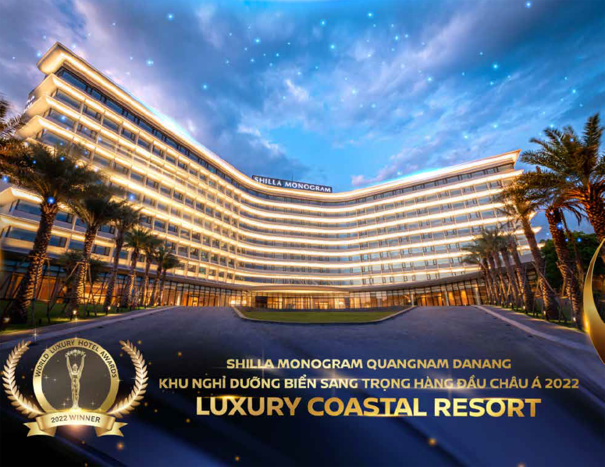

‘신라’는 최고 수준의 품격과 가치를 전합니다.
호텔신라는 대한민국 호텔 산업을 선도하며 각 호텔의 위상을 높이는 동시에 성장과 확산을 지속하고 있습니다.
창립이래 유수의 매체와 기관으로부터 끊임 없이 최고로 선정되고 많은 상을 수상하며 top-class 호텔로 인정받고 있습니다.
서울신라호텔, 국내 최초 5년 연속()’19~’23) Forbes 5성 선정
서울신라호텔, 라연 라 리스트 TOP 200위 선정(95점으로 한국 레스토랑 중 최고 점수)
신라모노그램 다낭, 월드 럭셔리 호텔어워즈(‘22) 아시아 럭셔리 해안 리조트 부문 수상
신라스테이, 한국산업 브랜드파워(K_BPI), 비즈니스 호텔부문 3년 연속(‘21~’23) 1위
신라스테이, 국내 단일 호텔 브랜드로 객실수 보유 1위
